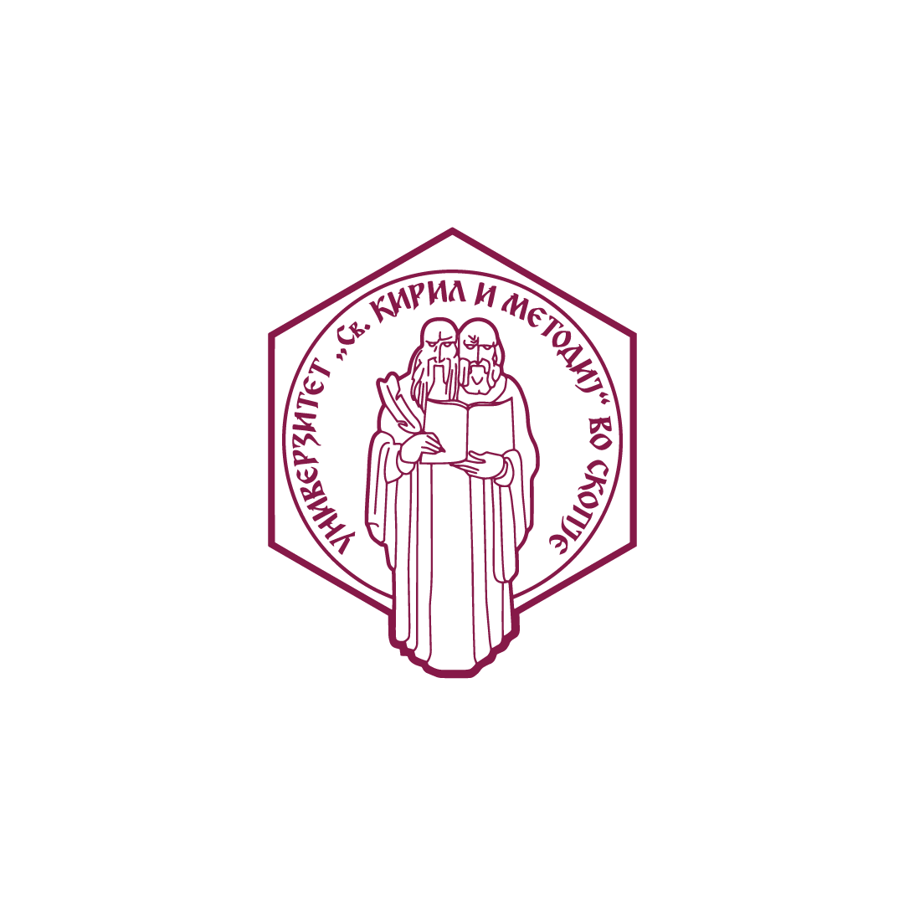
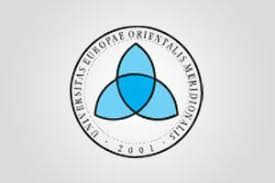
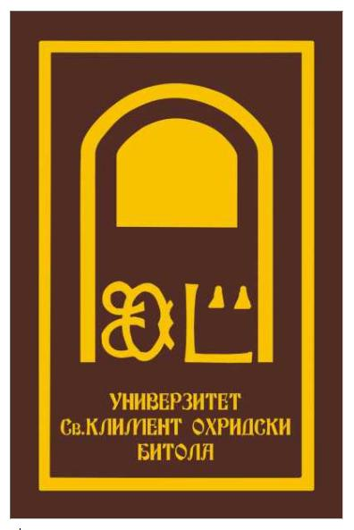
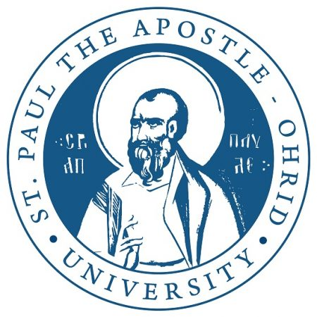
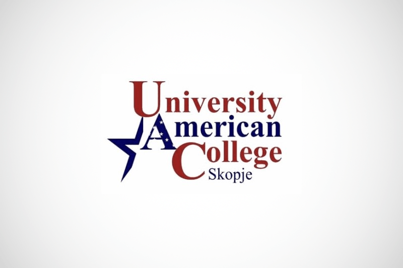
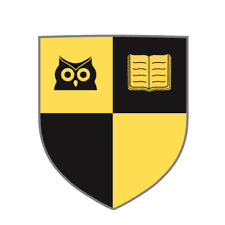
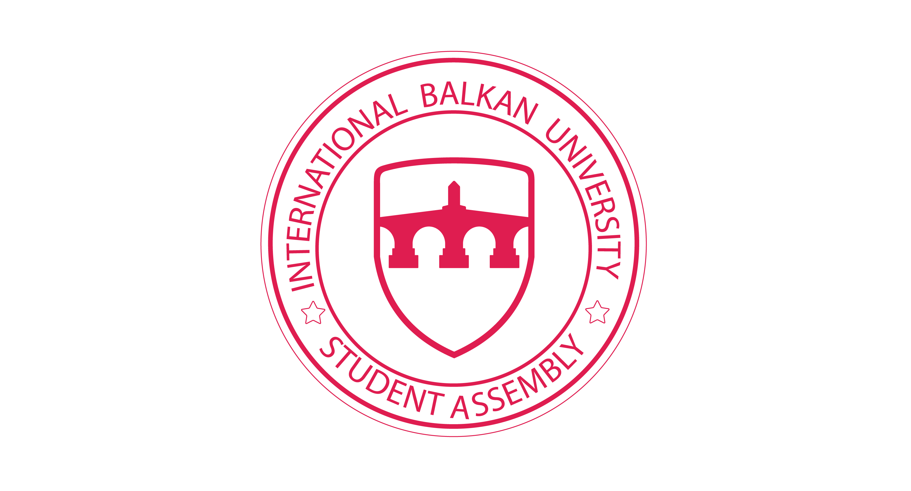

Makedonya'da Eğitim Alabileceğiniz Üniversiteler
Bosfor ile Makedonya'nın En İyi Üniversitelerinde Eğitim Alabilirsiniz
Makedonya Üniversiteleri

Üsküp Aziz Kiril ve Metodi Üniversitesi
Üsküp, Makedonya
Kuruluş: 1949
50.000+ Öğrenci
Detaylı Bilgi

Güneydoğu Avrupa Üniversitesi
Üsküp/Kalkandelen, Makedonya
Kuruluş: 2001
4.500+ Öğrenci
Detaylı Bilgi




